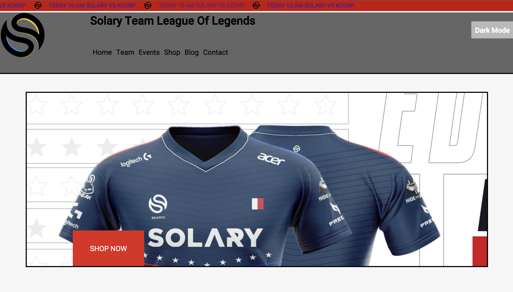

Solary, site for an esport team:
Techno used:
Languages:
- -HTML
- -CSS
- -JavaScript
- -PHP
Framework:
- -JQuery
For take code of this project:

For this first year in higher education each student, in web development, had to create a website. Mine is on Team Solary's esports team. During this first year we had specialized weeks on different things like HTML / CSS, JavaScript or PHP. Depending on the week the goal was to improve our site with what we had learned. We find on this site different pages such as a homepage, one on the team, a shopping page, blog or even contact. In terms of JavaScript I had to make different animations, a filter system or a slider, for those who are PHP I made an admin system to manage members (and their rights) or anything else is message.